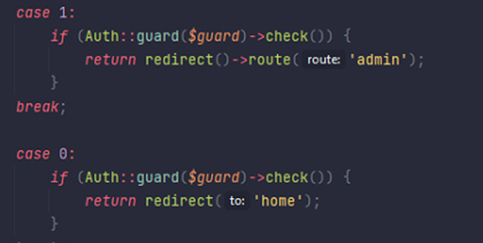
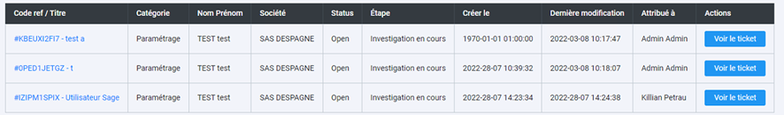

Pendant mon stage chez IntelSoft, j'ai eu l'opportunité de travailler sur un projet de gestion de tickets pour répondre à une demande spécifique de Monsieur Vilaine, un client utilisant le CRM de Sage. Monsieur Vilaine souhaitait permettre à ses clients de créer des tickets de support et de joindre des pièces jointes de manière efficace et intégrée dans le CRM de Sage. Cependant, malgré ses efforts pour trouver une solution avec le support de Sage, aucune option satisfaisante n'a été trouvée.
Face à ce défi, j'ai été chargé de développer une application de gestion de tickets qui répondrait aux besoins spécifiques de Monsieur Vilaine. Mon travail consistait à créer une solution autonome, capable d'intégrer les fonctionnalités souhaitées sans dépendre directement du CRM de Sage.
Pour cela, j'ai commencé par analyser en détail les exigences de Monsieur Vilaine et les contraintes techniques liées au développement d'une application de gestion de tickets en Laravel. Ensuite, j'ai conçu une architecture logicielle adaptée qui permettrait une gestion efficace des tickets et des pièces jointes, tout en assurant la sécurité et la fiabilité des données.
Au cours du développement, j'ai utilisé plusieurs technologies et outils, notamment Laravel pour le développement du back-end et Blade, le moteur de templates de Laravel, pour le front-end interactif. Pour les graphiques en temps réel, j'ai intégré Chart.js dans les vues Blade pour créer des représentations visuelles dynamiques des données. J'ai mis l'accent sur la convivialité de l'interface utilisateur pour garantir une expérience transparente pour les clients de Monsieur Vilaine. De plus, j'ai veillé à ce que l'application soit facilement extensible et personnalisable pour répondre aux besoins futurs de l'entreprise.
Parmi les fonctionnalités clés que j'ai développées dans l'application de gestion de tickets, plusieurs se démarquent par leur importance et leur impact sur l'expérience utilisateur. Tout d'abord, j'ai instauré un système d'upload de pièces jointes (le téléchargement de fichiers depuis l'appareil de l'utilisateur vers le serveur), intégrant une fonctionnalité de stockage et de gestion des fichiers directement dans la base de données grâce à Laravel's File Storage (une fonctionnalité de Laravel qui permet de stocker des fichiers de manière sécurisée). Cette fonctionnalité a été cruciale pour fournir une solution complète et intégrée pour la gestion des demandes de support, en utilisant les capacités de stockage de Laravel pour garantir la sécurité et la fiabilité des fichiers joints.
De plus, j'ai élaboré une procédure stockée avec une fonction de fusion (merge) (une opération qui combine deux ensembles de données en un seul) pour migrer les données de l'ancien système de gestion de tickets vers la nouvelle application. En utilisant des requêtes SQL complexes et des transactions sécurisées, j'ai assuré une transition en douceur des données, en préservant l'intégrité et la cohérence des informations essentielles pour le fonctionnement de l'entreprise.
En outre, j'ai mis en œuvre un système de gestion des droits d'accès basé sur les politiques de sécurité d'accès, en utilisant Laravel's Authorization (une fonctionnalité de Laravel pour gérer les autorisations d'accès) pour définir des règles d'accès granulaires. En attribuant des rôles et des permissions spécifiques aux utilisateurs et aux groupes, j'ai garanti que seuls les utilisateurs autorisés pouvaient accéder aux fonctionnalités sensibles de l'application, en renforçant ainsi la sécurité et la confidentialité des données.
J'ai également utilisé Chart.js (une bibliothèque JavaScript pour créer des graphiques) pour créer des graphiques interactifs permettant aux utilisateurs de consulter en temps réel le pourcentage de chaque statut de ticket. Ces graphiques ont été intégrés dans l'interface utilisateur, offrant une visualisation claire et dynamique de l'état actuel des tickets. Cette fonctionnalité a amélioré la prise de décision et la gestion efficace du flux de travail en permettant aux utilisateurs et aux administrateurs de suivre rapidement l'évolution des demandes de support.
Enfin, j'ai intégré un mécanisme de gestion des statuts des tickets basé sur un workflow configurable, en utilisant Laravel's Eloquent ORM (un outil de mapping objet-relationnel) pour modéliser les états et les transitions des tickets. En définissant des workflows personnalisés pour différents types de tickets, j'ai permis aux utilisateurs de suivre l'avancement de leurs demandes et aux administrateurs de gérer efficacement le flux de travail, en assurant la cohérence et la traçabilité des opérations.

Authentification selon le rôle

Tableau de la liste des tickets
Après avoir mené à bien le projet de gestion de tickets en tant que développeur unique, une réflexion rétrospective s'impose pour évaluer l'expérience et identifier les opportunités d'amélioration. Travailler seul sur un projet a été une expérience enrichissante, mais cela m'a également confrontés à des domaines que je pouvais améliorer et approfondir.
En prenant du recul, je reconnais l'importance de l'adoption de bonnes pratiques de développement logiciel, telles que l'intégration de tests unitaires. Bien que le projet ait été un succès, l'ajout de tests unitaires aurait pu contribuer à assurer la robustesse du code et à faciliter la détection précoce des erreurs, ce qui aurait amélioré la qualité du produit final.
De plus, je suis conscient de l'importance de l'anticipation des défis potentiels lors du déploiement d'une application en tant que développeur unique. Une évaluation plus approfondie des scénarios possibles aurait pu prévenir certains obstacles rencontrés lors de l'intégration dans l'environnement de travail. Une planification plus détaillée des tests, y compris des tests unitaires, aurait également pu garantir une meilleure qualité du produit final.
En envisageant une nouvelle itération du projet, je prioriserais une approche plus agile, avec une attention particulière à l'intégration de tests unitaires dans le processus de développement. Cela permettrait une meilleure assurance qualité et une maintenance plus facile du code à long terme.
En conclusion, cette expérience en tant que développeur unique sur le projet de gestion de tickets a été une occasion précieuse d'apprentissage et de croissance professionnelle. Réaliser ce projet concret avec le framework Laravel en PHP m'a permis de consolider mes compétences techniques et de gagner en confiance dans l'utilisation de cette technologie. De plus, effectuer mon premier déploiement avec IIS a été une étape importante dans mon parcours professionnel, élargissant mes compétences en matière de déploiement d'applications web. En réfléchissant aux succès et aux défis rencontrés, je suis mieux préparé à aborder de futurs projets avec une approche plus stratégique et orientée vers l'amélioration continue.
PETRAU KILLIAN